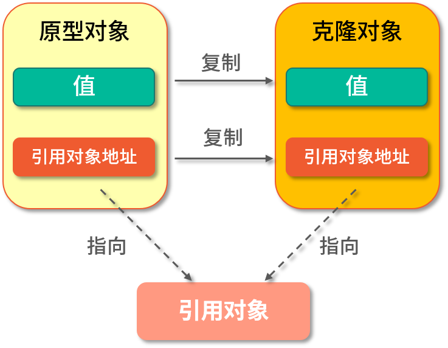
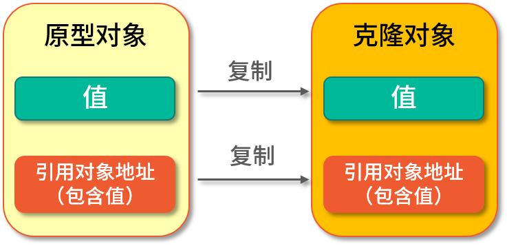

使用克隆可以为我们快速地构建出一个已有对象的副本，它属于Java基础的一部分，也是面试中常被问到的知识点之一。
典型回答 浅克隆（Shadow Clone） 是把原型对象中成员变量为值类型的属性都复制给克隆对象，把原型对象中成员变量为引用类型的引用地址也复制给克隆对象，也就是原型对象中如果有成员变量为引用对象，则此引用对象的地址是共享给原型对象和克隆对象的。
简单来说就是浅克隆只会复制原型对象，但不会复制它所引用的对象，如下图所示：

深克隆（Deep Clone） 是将原型对象中的所有类型，无论是值类型还是引用类型，都复制一份给克隆对象，也就是说深克隆会把原型对象和原型对象所引用的对象，都复制一份给克隆对象，如下图所示：

在Java 语言中要实现克隆则需要实现Cloneable接口，并重写Object类中的clone0方法，实现代码如下：
1 2 3 4 5 6 7 8 9 10 11 12 13 14 15 16 17 18 19 20 21 22 23 24 25 26 27 28 29 30 31 32 33 34 35 36 37 public class CloneExample public static void main (String[] args) throws CloneNotSupportedException People p1 = new People(); p1.setId(1 ); p1.setName("Java" ); People p2 = (People) p1.clone(); System.out.println("p2:" + p2.getName()); } static class People implements Cloneable private Integer id; private String name; @Override protected Object clone () throws CloneNotSupportedException return super .clone(); } public Integer getId () return id; } public void setId (Integer id) this .id = id; } public String getName () return name; } public void setName (String name) this .name = name; } } }
以上程序执行的结果为：
p2:Java
考点分析 克隆相关的面试题不算太难，但因为使用频率不高，因此很容易被人忽略，面试官通常会在一面或者二面的时候问到此知识点，和它相关的面试题还有以下这些：
在java.lang.Object中对clone0方法的约定有哪些？
Arrays.copyOf0是深克隆还是浅克隆？
深克隆的实现方式有几种？
Java中的克隆为什么要设计成，既要实现空接口Cloneable，还要重写Object的clone0方法？
知识扩展 clone（）源码分析
1 2 3 4 5 6 7 8 9 10 11 12 13 14 15 16 17 18 19 20 21 22 23 24 25 26 27 28 29 30 31 32 33 34 35
从以上源码的注释信息中我们可以看出，Object对clone0方法的约定有三条：
对于所有对象来说，x.clone0！=x应当返回true，因为克隆对象与原对象不是同一个对象；
对于所有对象来说，x.clone0.getClass0==x.getClass0应当返回true，因为克隆对象与原对象的类型是一样的；
对于所有对象来说，x.clone0.equals（x）应当返回true，因为使用equals 比较时，它们的值都是相同的。
除了注释信息外，我们看clone0的实现方法，发现clone0是使用native修饰的本地方法，因此执行的性能会很高，并且它返回的类型为Object，因此在调用克隆之后要把对象强转为目标类型才行。
Arrays.copyOf(） 如果是数组类型，我们可以直接使用Arrays.copyOf()来实现克隆，实现代码如下：
1 2 3 4 5 6 Integer[] nums1 = {3 , 5 , 7 , 9 }; Integer[] nums2 = Arrays.copyOf(nums1, nums1.length); nums2[0 ] = 5 ; System.out.println("nums1:" + Arrays.toString(nums2)); System.out.println("nums2:" + Arrays.toString(nums2));
以上程序的执行结果为：
nums1:[5, 5, 7, 9] nums2:[5, 5, 7, 9]
从结果可以看出，我们在修改克隆对象的第一个元素之后，原型对象的第一个元素也跟着被修改了，这说明Arrays.copyOf0其实是一个浅克隆。
你可能也发现了，数组中存储的明明是值类型，克隆之后应该是复制相关的值属性才对，但是数组比较特殊，因为数组本身就是引用类型，因此在使用Arrays.copyOf()其实只是把引用地址复制了一份给克隆对象，如果修改了它的引用对象，那么指向它的（引用地址）所有对象都会发生改变，因此看到的结果是，修改了克隆对象的第一个元素，原型对象也跟着被修改了。
深克隆实现方式汇总 深克隆的实现方式有很多种，大体可以分为以下几类：
所有对象都实现克隆方法；
通过构造方法实现深克隆；
使用JDK自带的字节流实现深克隆；
使用第三方工具实现深克隆，比如Apache Commons Lang；
使用JSON工具类实现深克隆，比如Gson、FastJSON等。
接下来我们分别来实现以上这些方式，在开始之前先定义一个公共的用户类，代码如下：
1 2 3 4 5 6 7 8 9 10 11 12 13 14 15 16 17 public class People private Integer id; private String name; private Address address; } public class Address private Integer id; private String city; }
可以看出在 People 对象中包含了一个引用对象 Address。
1.所有对象都实现克隆 这种方式我们需要修改People和Address类，让它们都实现Cloneable的接口，让所有的引用对象都实现克隆，从而实现People类的深克隆，代码如下：
1 2 3 4 5 6 7 8 9 10 11 12 13 14 15 16 17 18 19 20 21 22 23 24 25 26 27 28 29 30 31 32 33 34 35 36 37 38 39 40 41 42 43 44 45 46 47 48 49 public class CloneExample public static void main (String[] args) throws CloneNotSupportedException Address address = new Address(110 , "北京" ); People p1 = new People(1 , "Java" , address); People p2 = p1.clone(); p1.getAddress().setCity("西安" ); System.out.println("p1:" + p1.getAddress().getCity() + " p2:" + p2.getAddress().getCity()); } static class People implements Cloneable private Integer id; private String name; private Address address; @Override protected People clone () throws CloneNotSupportedException People people = (People) super .clone(); people.setAddress(this .address.clone()); return people; } } static class Address implements Cloneable private Integer id; private String city; @Override protected Address clone () throws CloneNotSupportedException return (Address) super .clone(); } } }
以上程序的执行结果为：
p1:西安 p2:北京
从结果可以看出，当我们修改了原型对象的引用属性之后，并没有影响克隆对象，这说明此对象已经实现了深克隆。
2.通过构造方法实现深克隆 《Effective Java》中推荐使用构造器（Copy Constructor）来实现深克隆，如果构造器的参数为基本数据类型或字符串类型则直接赋值，如果是对象类型，则需要重新new一个对象，实现代码如下：
1 2 3 4 5 6 7 8 9 10 11 12 13 14 15 16 17 18 19 20 21 22 23 24 25 26 27 28 29 30 31 32 33 34 public class SecondExample public static void main (String[] args) throws CloneNotSupportedException Address address = new Address(110 , "北京" ); People p1 = new People(1 , "Java" , address); People p2 = new People(p1.getId(), p1.getName(), new Address(p1.getAddress().getId(), p1.getAddress().getCity())); p1.getAddress().setCity("西安" ); System.out.println("p1:" + p1.getAddress().getCity() + " p2:" + p2.getAddress().getCity()); } static class People private Integer id; private String name; private Address address; } static class Address private Integer id; private String city; } }
以上程序的执行结果为：
p1:西安 p2:北京
从结果可以看出，当我们修改了原型对象的引用属性之后，并没有影响克隆对象，这说明此对象已经实现了深克隆。
3.通过字节流实现深克隆 通过JDK自带的字节流实现深克隆的方式，是先将要原型对象写入到内存中的字节流，然后再从这个字节流中读出刚刚存储的信息，来作为一个新的对象返回，那么这个新对象和原型对象就不存在任何地址上的共享，这样就实现了深克隆，代码如下：
1 2 3 4 5 6 7 8 9 10 11 12 13 14 15 16 17 18 19 20 21 22 23 24 25 26 27 28 29 30 31 32 33 34 35 36 37 38 39 40 41 42 43 44 45 46 47 48 49 50 51 52 53 54 55 56 57 58 59 60 import java.io.*;public class ThirdExample public static void main (String[] args) throws CloneNotSupportedException Address address = new Address(110 , "北京" ); People p1 = new People(1 , "Java" , address); People p2 = (People) StreamClone.clone(p1); p1.getAddress().setCity("西安" ); System.out.println("p1:" + p1.getAddress().getCity() + " p2:" + p2.getAddress().getCity()); } static class StreamClone public static <T extends Serializable> T clone (People obj) { T cloneObj = null ; try { ByteArrayOutputStream bo = new ByteArrayOutputStream(); ObjectOutputStream oos = new ObjectOutputStream(bo); oos.writeObject(obj); oos.close(); ByteArrayInputStream bi = new ByteArrayInputStream(bo.toByteArray()); ObjectInputStream oi = new ObjectInputStream(bi); cloneObj = (T) oi.readObject(); oi.close(); } catch (Exception e) { e.printStackTrace(); } return cloneObj; } } static class People implements Serializable private Integer id; private String name; private Address address; } static class Address implements Serializable private Integer id; private String city; } }
以上程序的执行结果为：
p1:西安 p2:北京
此方式需要注意的是，由于是通过字节流序列化实现的深克隆，因此每个对象必须能被序列化，必须实现Serializable接口，标识自己可以被序列化，否则会抛出异常（java.io.NotSerializableException）。
4.通过第三方工具实现深克隆 本课时使用 Apache Commons Lang 来实现深克隆，实现代码如下：
1 2 3 4 5 6 7 8 9 10 11 12 13 14 15 16 17 18 19 20 21 22 23 24 25 26 27 28 29 30 31 32 33 34 35 36 37 38 39 40 41 42 import org.apache.commons.lang3.SerializationUtils;import java.io.Serializable;public class FourthExample public static void main (String[] args) throws CloneNotSupportedException Address address = new Address(110 , "北京" ); People p1 = new People(1 , "Java" , address); People p2 = (People) SerializationUtils.clone(p1); p1.getAddress().setCity("西安" ); System.out.println("p1:" + p1.getAddress().getCity() + " p2:" + p2.getAddress().getCity()); } static class People implements Serializable private Integer id; private String name; private Address address; } static class Address implements Serializable private Integer id; private String city; } }
以上程序的执行结果为：
p1:西安 p2:北京
可以看出此方法和第三种实现方式类似，都需要实现 Serializable 接口，都是通过字节流的方式实现的，只不过这种实现方式是第三方提供了现成的方法，让我们可以直接调用。
5.通过 JSON 工具类实现深克隆 本课时我们使用 Google 提供的 JSON 转化工具 Gson 来实现，其他 JSON 转化工具类也是类似的，实现代码如下：
1 2 3 4 5 6 7 8 9 10 11 12 13 14 15 16 17 18 19 20 21 22 23 24 25 26 27 28 29 30 31 32 33 34 35 36 37 38 39 40 import com.google.gson.Gson;public class FifthExample public static void main (String[] args) throws CloneNotSupportedException Address address = new Address(110 , "北京" ); People p1 = new People(1 , "Java" , address); Gson gson = new Gson(); People p2 = gson.fromJson(gson.toJson(p1), People.class ) ; p1.getAddress().setCity("西安" ); System.out.println("p1:" + p1.getAddress().getCity() + " p2:" + p2.getAddress().getCity()); } static class People private Integer id; private String name; private Address address; } static class Address private Integer id; private String city; } }
以上程序的执行结果为：
p1:西安 p2:北京
使用JSON工具类会先把对象转化成字符串，再从字符串转化成新的对象，因为新对象是从字符串转化而来的，因此不会和原型对象有任何的关联，这样就实现了深克隆，其他类似的JSON工具类实现方式也是一样的。
克隆设计理念猜想 对于克隆为什么要这样设计，官方没有直接给出答案，我们只能凭借一些经验和源码文档来试着回答一下这个问题。Java 中实现克隆需要两个主要的步骤，一是实现Cloneable空接口，二是重写Object 的clone0方法再调用父类的克隆方法（super.clone()），那为什么要这么做？
从源码中可以看出Cloneable 接口诞生的比较早，JDK1.0就已经存在了，因此从那个时候就已经有克隆方法了，那我们怎么来标识一个类级别对象拥有克隆方法呢？克隆虽然重要，但我们不能给每个类都默认加上克隆，这显然是不合适的，那我们能使用的手段就只有这几个了：
在类上新增标识，此标识用于声明某个类拥有克隆的功能，像final关键字一样；
使用Java中的注解；
实现某个接口；
继承某个类。
先说第一个，为了一个重要但不常用的克隆功能，单独新增一个类标识，这显然不合适；再说第二个，因为克隆功能出现的比较早，那时候还没有注解功能，因此也不能使用；第三点基本满足我们的需求，第四点和第一点比较类似，为了一个克隆功能需要牺牲一个基类，并且Java只能单继承，因此这个方案也不合适。采用排除法，无疑使用实现接口的方式是那时最合理的方案了，而且在Java 语言中一个类可以实现多个接口。
那为什么要在Object 中添加一个clone()方法呢？
因为clone()方法语义的特殊性，因此最好能有JVM的直接支持，既然要JVM直接支持，就要找一个API来把这个方法暴露出来才行，最直接的做法就是把它放入到一个所有类的基类Object中，这样所有类就可以很方便地调用到了。